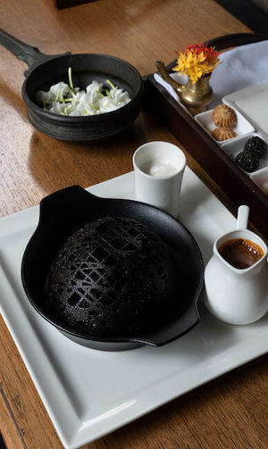

Trivandrum’s culinary history inspired us to combine traditional cuisine with contemporary style. The menu presents a wide repertoire of cuisine from the countries that historically traded with Kerala. The menu is a gastromonical journey through Kerala, India, Morocco and Italy. Each dish has been carefully handpicked for its cultural heritage, authenticity and resonance with the tastes of Kerala and is presented in a multisensory delight of exciting flavours, textures and aromas.
At Makayiram, food is more than just the taste - It is, along with an exhilarating experience, a journey into the past. Not just the preparation, the presentation too reminds one of India’s rich cultural heritage.